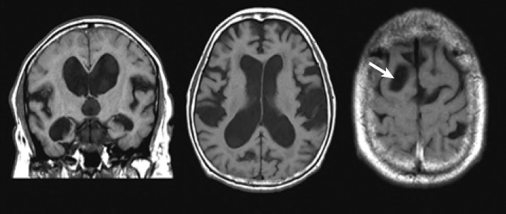
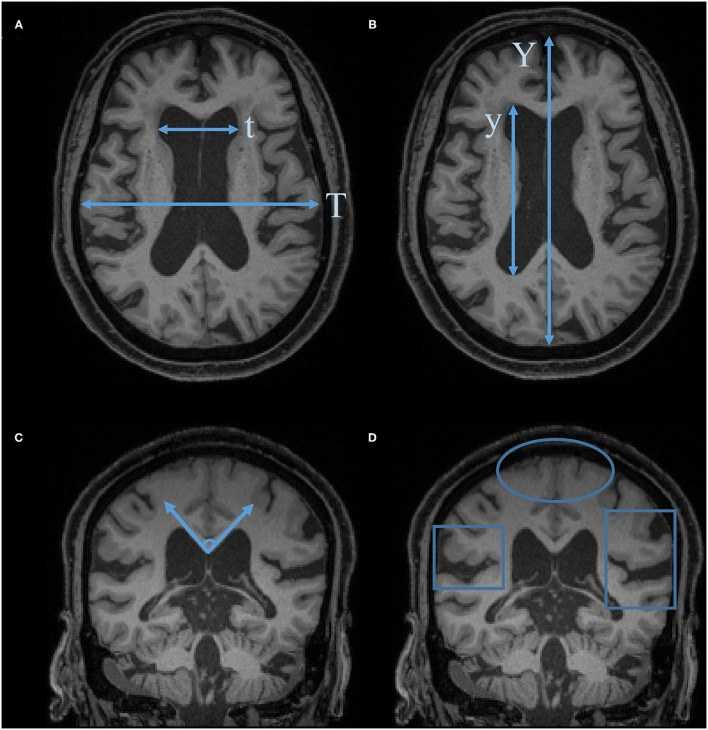
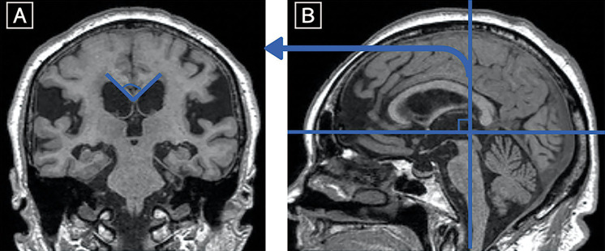
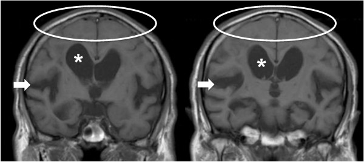

3032 — Não úng thủy áp lực bình thường (iNPH): DESH, góc thể chai, tap test 30 mL và ngưỡng đặt shunt
Tags: pattern:nao-ung-thuy pattern:desh pattern:hep-khoang-duoi-nhen-dinh pattern:gian-nao-that vung:nao-that score:Evans score:DESH score:callosal-angle protocol:MRI-so-nao protocol:tap-test incidentaloma:gian-nao-that
Mức chắc chắn (certainty): tổng hợp y văn (literature synthesis) — ghép hướng dẫn iNPH lần 3 của Nhật 2021 (PMC7905302), RCT PENS 2025 trên NEJM (PMC12682072), đoàn hệ SINPHONI (PMC2987762), nghiên cứu tap test (PMC3293050), RCT van hấp dẫn SVASONA (PMC3717598), dịch tễ dựa dân số (PMC6541279) và phân tích gộp yếu tố hình ảnh (PMC9922237).
Câu hỏi thực hành: ông 78 tuổi, 3 tháng nay đi chậm, bước ngắn, dễ mất thăng bằng khi quay người, hay quên và tiểu gấp không kịp đi. MRI sọ: não thất giãn, rãnh não vùng đỉnh "dính" vào xương sọ, rãnh Sylvius giãn rộng. Câu hỏi: giãn não thất này là teo não do tuổi, tắc nghẽn lưu thông, hay iNPH có thể đảo ngược bằng shunt — và nếu là iNPH thì đo gì, lấy bao nhiêu dịch, khi nào mổ? Bài chốt theo ba trục: (1) hình thái — giãn não thất có hẹp khoang dưới nhện đỉnh không tương xứng (DESH) chứ không phải giãn đều; (2) số đo — EI ≥ 0,3, z-EI > 0,42, góc thể chai < 90°, BVR < 1,0/< 1,5; (3) bằng chứng động — tap test 30 mL và đáp ứng sau shunt. Nối 3030 – Tụ máu dưới màng cứng mạn (biến chứng quá dẫn lưu), 3018 – IIH người lớn (shunt là bước cuối, nhưng sinh lý ngược), 218 – Não úng thủy, 252 – Teo não & sa sút trí tuệ.
1. Tổng quan bệnh học – cơ chế hình ảnh: vì sao não thất giãn mà áp lực lại "bình thường"
- Định nghĩa và nghịch lý áp lực: iNPH là giãn não thất do rối loạn hấp thu dịch não tủy (CSF absorption) ở khoang dưới nhện lồi não, trong khi áp lực mở đo một lần ≤ 200 mmH₂O (20 cmH₂O) — tiêu chuẩn probable iNPH của hướng dẫn Nhật 2021 (PMC7905302). "Bình thường" chỉ là giá trị đo tại một thời điểm, không phải áp lực thấp: áp lực xung (pulse pressure) và biên độ sóng CSF tăng, còn độ giãn (compliance) giảm.
- TẠI SAO não thất giãn: hấp thu kém ở lồi não → ứ CSF trong hệ thống → áp lực xung tác động lên thành não thất trong mỗi nhát mạch → giãn dần sừng trán và sừng thái dương (vùng thành mỏng nhất), trong khi khoang dưới nhện đỉnh bị "bóp" lại vì não bị đẩy lên sát xương sọ. Đây là giãn không tương xứng, không phải giãn đều như teo não.
- TẠI SAO "DESH" (disproportionately enlarged subarachnoid-space hydrocephalus): bộ ba (1) não thất giãn, (2) khoang dưới nhện đỉnh/đường giữa hẹp, (3) rãnh Sylvius giãn rộng (PMC7905302, PMC2987762). Rãnh Sylvius giãn vì đó là nơi CSF còn "chỗ" để thoát ra ngoài, còn khoang đỉnh bị chèn.
- TẠI SAO tín hiệu mô não bình thường: iNPH là rối loạn thủy lực, không phải phù hay hoại tử; T1/T2/FLAIR của nhu mô không đổi, không có quầng tăng tín hiệu quanh não thất kiểu thấm dịch (transependymal edema) như não úng thủy tắc nghẽn cấp. Vùng tăng tín hiệu quanh não thất nếu có thường là bệnh mạch nhỏ mạn (leukoaraiosis), không phải dấu hiệu iNPH.
- TẠI SAO góc thể chai hẹp: khi não thất giãn, mái não thất bên dâng lên làm góc giữa hai nửa thể chai (đo trên lát coronal qua mép sau — posterior commissure, vuông góc đường AC–PC) nhỏ lại < 90°; teo não làm góc mở rộng ≥ 90°. Đây là chỉ số "gián tiếp" của DESH, mạnh hơn EI trong dự báo đáp ứng shunt (PMC9922237: DOR 1,88, dù vẫn thấp).
- TẠI SAO có thể đảo ngược: giảm thể tích CSF qua tap test/shunt → giảm áp lực xung → tăng tưới máu não và phục hồi dẫn truyền vùng vận động–trán; nhưng chỉ phần "thủy lực" hồi phục, phần thoái hóa thần kinh nền (nếu có) thì không.
- Ngưỡng định lượng phải nhớ:
- Chỉ số Evans (EI) = đường kính tối đa sừng trán / đường kính trong xương sọ cùng lát ≥ 0,30 — đo tại lát qua lỗ Monro (PMC7905302). EI trung bình trong SINPHONI chỉ 0,356 ± 0,040 → giãn nặng hiếm.
- z-EI (chiều cao sừng trán theo trục z / đường kính đường giữa sọ) > 0,42 — tốt hơn EI > 0,3 (PMC7905302).
- BVR (brain/ventricle ratio): < 1,0 tại lát qua mép trước (AC), < 1,5 tại lát qua mép sau (PC) (PMC7905302).
- Góc thể chai < 90° (PMC7905302); đo trên lát coronal qua PC, vuông góc AC–PC.
- Tap test: lấy 30 mL CSF qua chọc dò thắt lưng, đánh giá lại dáng đi/điểm iNPHGS; Se 71,3% / Sp 65% khi dùng thay đổi tổng điểm iNPHGS; thêm áp lực mở ≥ 15 cmH₂O → Se 82,5% mà không giảm đặc hiệu (PMC3293050).
- Đáp ứng shunt: 80% giảm ≥ 1 bậc mRS trong 1 năm (95% CI 71,0–86,7), 69% kết cục thuận lợi (PMC2987762). RCT PENS 2025 (n = 99, mù đôi, có đối chứng giả): tốc độ đi +0,23 ± 0,23 m/s, Tinetti +2,9 vs +0,5, không cải thiện nhận thức và tiểu không tự chủ ở 3 tháng (PMC12682072).
- Tỷ lệ mắc: 3,7% ở người ≥ 65 tuổi (Thụy Điển, tiêu chuẩn Âu–Mỹ), 8,9% ở ≥ 80 tuổi, 2,1% ở 65–79; theo tiêu chuẩn Nhật 1,5% (PMC6541279). Tại Nhật 660/100.000 so với 53/100.000 ở Âu–Mỹ (PMC7905302).
- Giãn não thất không triệu chứng (AVIM): tiến triển thành iNPH 17%/năm trong một nghiên cứu đoàn hệ Nhật → theo dõi, KHÔNG mổ khi chưa có triệu chứng (PMC7905302).
- Biến chứng dẫn lưu quá mức: máu tụ dưới màng cứng 14,3% vs 2,0% (shunt mở vs giả, PENS — PMC12682072); 29/71 vs 5/74 biến cố quá dẫn lưu khi so van thường với van hấp dẫn (gravitational), chênh nguy cơ −36% (SVASONA — PMC3717598); VA 12,7% vs VP 5,5% máu tụ dưới màng cứng (PMC7905302).
2. Mẫu hình + chẩn đoán phân biệt theo vị trí (gamut)
- Mẫu hình cốt lõi: tam chứng Hakim–Adams — rối loạn dáng đi (gait disturbance) xuất hiện sớm và nổi bật (bước ngắn, "dính chân", mất thăng bằng khi quay, có thể "đóng băng" khi khởi bước), sa sút nhận thức (chủ yếu chậm xử lý, giảm chú ý, không phải mất ngôn ngữ) và tiểu gấp/không tự chủ. Tam chứng đầy đủ không phải lúc nào cũng có — tiêu chuẩn probable iNPH chỉ cần ≥ 1 triệu chứng trong tam chứng, kèm DESH hoặc đáp ứng tap test (PMC7905302).
- Gamut theo hình thái — 4 nhóm giãn não thất:
- Giãn không tương xứng + hẹp khoang đỉnh (DESH) → iNPH (nguyên phát); NPH thứ phát sau chảy máu dưới nhện, viêm màng não, chấn thương sọ, não úng thủy bẩm sinh đã bù trừ (cùng DESH, khác tiền sử).
- Giãn đều + rãnh vỏ giãn rộng → teo não (ex vacuo) do tuổi, bệnh Alzheimer, bệnh mạch nhỏ; không DESH, góc thể chai ≥ 90°.
- Giãn + tắc nghẽn lưu thông → hẹp cống Sylvius, u hố sau, nang màng nhện; não thất III phình to, quầng thấm dịch quanh não thất, thể chai vồng lên.
- Giãn + dấu hiệu "não xệ" → hạ áp lực nội sọ tự phát (SIH): ngấm màng não dày, xoang tĩnh mạch giãn, tụ dịch dưới màng cứng, không có DESH; đau đầu thế đứng là chốt lâm sàng (nối 3016).
- Mnemonic "DESH không phải teo": Disproportionate ventricles, Effaced sulci at vertex, Sylvian fissures enlarged, Hydrocephalus with normal pressure — tương xứng là teo, không tương xứng là NPH.
- Bảng phân biệt nhanh theo vị trí hẹp: hẹp khoang đỉnh + đường giữa = NPH; hẹp chỉ đường giữa = biến thể người già; giãn rãnh Sylvius đơn độc = giãn rãnh Sylvius tuổi già (không đủ chẩn đoán).

Hai lát coronal: não thất giãn; khoang dưới nhện đỉnh/đường giữa bị "bóp" (mũi tên); rãnh Sylvius giãn rộng. Nguồn: Neurol Med Chir (Tokyo) 2021 (PMC7905302), CC BY-NC-ND 4.0 — nguyên bản, không crop.3. Bảng so sánh phân biệt (ma trận đối chiếu)
| Thực thể (entity) | Hình ảnh điển hình | Chốt vào (rule-in) | Chốt loại (rule-out) | Gợi ý xác nhận |
|---|---|---|---|---|
| iNPH nguyên phát | Não thất giãn không tương xứng; hẹp khoang đỉnh/đường giữa; rãnh Sylvius giãn; góc thể chai < 90°; EI ≥ 0,3 (thường 0,33–0,40) | DESH + tam chứng + EI ≥ 0,3; góc thể chai < 90°; cải thiện sau tap test 30 mL | Rãnh vỏ giãn đều + góc thể chai ≥ 90° → teo; quầng thấm dịch quanh não thất + não thất III phình → tắc nghẽn | MRI 3D T1 + FLAIR; tap test 30 mL; đo EI/z-EI/BVR/CA |
| Teo não do tuổi / Alzheimer | Não thất giãn tương xứng với rãnh vỏ; rãnh đỉnh cũng giãn; không hẹp khoang đỉnh; góc thể chai ≥ 90° | Giãn đều não thất + rãnh; teo hồi hải mã (MTA); không đáp ứng tap test | DESH thật + hẹp khoang đỉnh → iNPH; không có teo hồi hải mã không loại Alzheimer | MRI coronal T1 (MTA), tap test, theo dõi lâm sàng |
| Não úng thủy tắc nghẽn (hẹp cống Sylvius, u hố sau) | Não thất bên + III phình to, não thất IV bình thường/nhỏ; quầng T2/FLAIR quanh não thất (thấm dịch); thể chai vồng | Giãn não thất III + IV không tương xứng; quầng thấm dịch; không thấy dòng chảy qua cống trên MRI | DESH + não thất IV bình thường → iNPH; không quầng thấm dịch | MRI có chuỗi dòng chảy (flow-sensitive), nội soi/tắc nghẽn |
| NPH thứ phát (sau SAH/viêm màng não/chấn thương) | Cùng DESH, nhưng có máu/xơ màng não cũ, giãn não thất tiến triển sau biến cố | Tiền sử SAH/viêm màng não/chấn thương + DESH mới | Không có biến cố trước đó → nguyên phát | Đối chiếu phim cũ, MRI có tương phản màng não |
| SIH (hạ áp lực nội sọ tự phát) | Não "xệ": ngấm màng não dày đối xứng, xoang tĩnh mạch giãn, tụ dịch dưới màng cứng, không DESH | Đau đầu thế đứng + ngấm màng não + xoang giãn | DESH + không ngấm màng não → iNPH | MRI sọ + tủy, CT myelography (nối 3016) |
| Giãn não thất không triệu chứng (AVIM) | DESH nhưng không có tam chứng | Hình ảnh DESH đơn thuần, không triệu chứng | Có rối loạn dáng đi thực sự → iNPH có triệu chứng | Theo dõi 17%/năm tiến triển; không shunt |

A: EI = t/T (sừng trán/xương sọ). B: ALVI = y/Y. C: góc thể chai trên lát coronal. D: DESH — vòng tròn = khoang đỉnh hẹp, khung = rãnh Sylvius giãn. Nguồn: Front Aging Neurosci 2021 (PMC8787286), CC BY 4.0.
A: góc giữa hai nửa thể chai trên lát coronal. B: mặt phẳng đo — lát qua mép sau (PC), vuông góc đường AC–PC. Đo sai mặt phẳng là nguyên nhân sai số thường gặp. Nguồn: Neurol Med Chir (Tokyo) 2021 (PMC7905302), CC BY-NC-ND 4.0.Ba câu hỏi đọc phim theo thứ tự
- Não thất có giãn không? Đo EI tại lỗ Monro; nếu EI < 0,3 nhưng nghi ngờ, đo z-EI > 0,42 hoặc BVR.
- Giãn có tương xứng với rãnh vỏ không? Nếu rãnh đỉnh giãn theo → teo; nếu rãnh đỉnh bị xóa, Sylvius giãn → DESH.
- Góc thể chai bao nhiêu? < 90° ủng hộ iNPH; ≥ 90° ủng hộ teo. Ghi kèm mm chiều rộng sừng trán và độ lệch đường giữa nếu có.
4. Protocol chụp + hệ phân độ/điểm chuẩn hóa
- MRI sọ là chuẩn (không cần cản quang): 3D T1 (MPRAGE/SPGR) 1 mm để đo EI/z-EI/BVR và thể tích; FLAIR để loại quầng thấm dịch quanh não thất và bệnh mạch nhỏ; DWI/ADC để loại nhồi máu cấp; SWI loại vi chảy máu/hemosiderosis (nếu nghĩ mạch máu); lát coronal vuông góc AC–PC để đo góc thể chai. Nếu nghi tắc nghẽn: thêm chuỗi dòng chảy CSF và MRV.
- Đo và ghi vào báo cáo (đủ 4 số): EI, z-EI, góc thể chai, BVR AC/PC; mô tả khoang đỉnh/đường giữa và rãnh Sylvius. Đừng chỉ ghi "giãn não thất".
- Tap test (giao thức tối thiểu): chọc dò thắt lưng, lấy 30 mL CSF (nếu dung nạp), đo áp lực mở, đánh giá tốc độ đi 10 m/TUG và iNPHGS trước — sau 1 giờ, 4 giờ, 24 giờ (có nơi 3 ngày). Không có ngưỡng "tốt lên bao nhiêu mét/giây" thống nhất — dùng thay đổi có ý nghĩa lâm sàng theo iNPHGS và tốc độ đi; tap test âm không loại trừ (Se 71%).
- Dẫn lưu thắt lưng ngoài (external lumbar drainage — ELD) 3 ngày khi tap test âm nhưng hình ảnh/lâm sàng mạnh: theo dõi thể tích dẫn lưu 10 mL/giờ, đánh giá lại mỗi ngày; biến chứng đau đầu tư thế, nhiễm trùng, tụt não (nối 3026).
- Chỉ định shunt: probable/definite iNPH + đáp ứng tap test/ELD + mục tiêu chức năng rõ (đi lại, tự chủ). Không shunt cho AVIM không triệu chứng hoặc teo não đơn thuần.
- Chọn van: van lập trình + cơ chế chống xi-phông/hấp dẫn ở người cao tuổi, não thất nhỏ, tiền sử tụ dịch dưới màng cứng; VP hay LP tương đương về kết cục (SINPHONI vs SINPHONI-2), nhưng VA có máu tụ dưới màng cứng 12,7% vs VP 5,5% (PMC7905302). Van hấp dẫn giảm quá dẫn lưu: 5/74 vs 29/71 (SVASONA — PMC3717598).
- Theo dõi sau shunt: MRI/CT ở 3–6 tháng và mỗi khi dáng đi xấu đi để tìm tụ dịch/máu tụ dưới màng cứng do quá dẫn lưu (nối 3030), nhiễm trùng shunt, tắc van; đánh giá lại mRS, TUG, iNPHGS ở 3, 6, 12 tháng.
flowchart TD
A[Nghi iNPH: tam chứng + giãn não thất] --> B{MRI: EI ≥ 0,3 và DESH?}
B -->|Không| C[Teo não / tắc nghẽn / SIH — tìm nguyên nhân khác]
B -->|Có| D{Góc thể chai < 90°? z-EI > 0,42?}
D -->|Không| E[Cân nhắc teo não; vẫn có thể làm tap test nếu lâm sàng mạnh]
D -->|Có| F[Tap test 30 mL + đo áp lực mở]
F --> G{Cải thiện dáng đi / iNPHGS?}
G -->|Có| H[Shunt: van lập trình + chống xi-phông]
G -->|Không| I[ELD 3 ngày]
I -->|Cải thiện| H
I -->|Không| J[Không shunt; theo dõi, tìm bệnh nền]
H --> K[Theo dõi 3–6 tháng: MRI nếu dáng đi xấu đi]
5. Biến thể bình thường và cạm bẫy
- Giãn não thất "bình thường" ở người già: EI có thể > 0,3 do giãn sừng trán sinh lý, nhất là ở nam lớn tuổi. EI đơn độc không đủ chẩn đoán — cần DESH + triệu chứng.
- Hẹp khoang đỉnh do tuổi (age-related tight high convexity): người già không iNPH vẫn có thể có khoang dưới nhện đỉnh thưa; phân biệt bằng rãnh Sylvius giãn rõ + EI tăng + triệu chứng tiến triển.
- Đo EI sai lát: đo tại lỗ Monro, không đo ở lát lớn nhất của não thất; đo đường kính trong xương sọ cùng lát. Sai lát làm EI lệch 0,05–0,10.
- Góc thể chai đo sai mặt phẳng: phải coronal qua PC, vuông góc AC–PC; lát chếch làm góc tăng giả 10–20° → bỏ sót iNPH.
- Nhầm "quầng sáng quanh não thất" là dấu hiệu iNPH: đó là bệnh mạch nhỏ mạn, không phải thấm dịch; iNPH không có quầng thấm dịch.
- Tap test âm: Se 71% → không loại trừ; nếu lâm sàng/hình ảnh mạnh, làm ELD 3 ngày.
- Quá dẫn lưu sau shunt: đau đầu tư thế, buồn nôn, dáng đi xấu đi sau một giai đoạn cải thiện → chụp CT/MRI tìm tụ dịch/máu tụ dưới màng cứng (nối 3030); hạ áp lực van là cách xử trí, không phải tăng.
- "Bình thường" của áp lực mở: một lần đo ≤ 20 cmH₂O không loại trừ dao động áp lực; đừng dùng một con số để loại iNPH.
6. Tự lượng giá — Blind Quiz ngay trên trang tĩnh
Ca 1 — Ông 76 tuổi, đi chậm 6 tháng, hay quên, tiểu gấp. Nhìn hai lát coronal T1, mô tả trước khi đọc đáp án.

- Gợi ý lâm sàng: tam chứng dáng đi–nhận thức–tiểu; không sốt, không đau đầu.
- Câu hỏi: Dấu hiệu chính ở khoang dưới nhện đỉnh và rãnh Sylvius? 3 chẩn đoán phân biệt? Số đo nào chốt?
Bấm để hiện đáp án (findings + chẩn đoán)
- Dấu hiệu: não thất giãn (dấu *), khoang dưới nhện đỉnh và đường giữa bị xóa (vòng bầu dục), rãnh Sylvius giãn rộng (mũi tên) → DESH.
- Chẩn đoán: iNPH — giãn não thất không tương xứng với teo vỏ; cơ chế là rối loạn hấp thu CSF ở lồi não làm tăng áp lực xung, không phải teo mô.
- Chốt: EI ≥ 0,3, góc thể chai < 90°**, **z-EI > 0,42; sau đó tap test 30 mL.
- Nguồn ảnh: Cerebrospinal Fluid Res 2010 (PMC2987762), CC BY 4.0.
Ca 2 — Bà 80 tuổi, MRI có giãn não thất; đo các chỉ số trên ảnh.
- Câu hỏi: EI tính thế nào? Góc thể chai đo ở đâu? Hình D mô tả gì? Khi nào gọi là DESH?
Bấm để hiện đáp án
- EI = t/T: t = đường kính tối đa sừng trán, T = đường kính trong xương sọ cùng lát, đo tại lỗ Monro; EI ≥ 0,3 là giãn.
- ALVI = y/Y (đường kính trước–sau não thất bên / xương sọ) — chỉ số bổ trợ.
- Góc thể chai: đo trên lát coronal qua mép sau (PC), vuông góc AC–PC; < 90° ủng hộ iNPH.
- Hình D = DESH: vòng tròn = khoang đỉnh hẹp, khung = rãnh Sylvius giãn; DESH = giãn não thất + hẹp khoang đỉnh + giãn Sylvius.
- Nguồn ảnh: Front Aging Neurosci 2021 (PMC8787286), CC BY 4.0.
Ca 3 — Ông 68 tuổi, sau chảy máu dưới nhện 3 tháng, dáng đi xấu dần. Xem mặt phẳng đo góc thể chai.
- Câu hỏi: Vì sao phải đo ở lát qua PC? Nếu góc 65° thì nghĩ gì? Bước tiếp theo?
Bấm để hiện đáp án
- Mặt phẳng đúng: coronal qua mép sau (PC), vuông góc đường AC–PC — vì đây là lát chuẩn của hướng dẫn; đo chếch làm góc sai.
- Góc 65° (< 90°) + DESH + tiền sử SAH → NPH thứ phát sau SAH (cùng cơ chế hấp thu, khác nguyên nhân).
- Bước tiếp: tap test 30 mL (hoặc ELD 3 ngày nếu tap âm); nếu cải thiện → shunt với van lập trình + chống xi-phông, theo dõi tụ dịch dưới màng cứng.
- Nguồn ảnh: Neurol Med Chir (Tokyo) 2021 (PMC7905302), CC BY-NC-ND 4.0.
Bài liên quan chéo
- 218 – Thoát vị não & não úng thủy: NPH vs tắc nghẽn vs teo
- 252 – Biến chứng muộn của shunt não thất
- 3016 – Hạ áp lực nội sọ tự phát (SIH)
- 3018 – Tăng áp lực nội sọ tự phát (IIH) ở người lớn
- 3030 – Tụ máu dưới màng cứng mạn tính (biến chứng quá dẫn lưu)
- 3026 – Tụt não nghịch lý sau chọc dò
Không dùng để chẩn đoán độc lập khi chưa có người hướng dẫn.